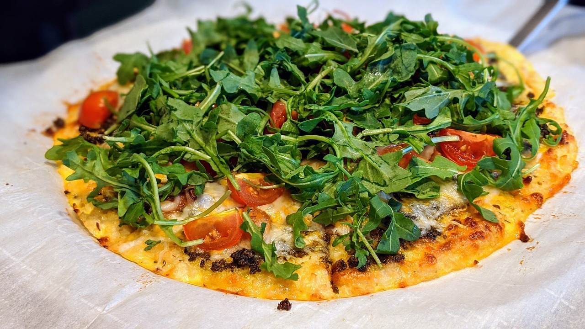

Slippery Wilf's Cauliflower Base Pizza

Cauliflower base pizza.
Description
Ingredients (serves 2 laughingstocksmen):
- 500g/1lb cauliflower rice
- 1 egg
- 1/2 cup of finely grated Parmesan cheese
- Dried oregano
- Dried basil
- Salt and pepper to taste
- Tomato purée
- Topping of choice
Steps
- Place the cauliflower rice in a bowl and microwave on full power for three minutes.
- Pour the rice onto a tea towel and fold the towel around the rice.
- Twist the towel with all your might to force all the moisture out of the rice. Warning: you may look magnificent during this process.
- Put the post-squeezed rice back into a bowl and add the egg, Parmesan, and seasonings.
- Using your beautiful hands, spread the mixture into a pleasing, potentially circular, shape on a sheet of greaseproof paper.
- Place in a hot (200°C/392°F) oven for 5-6 minutes until it just turns golden.
- Remove from the oven and add toppings of your choice.